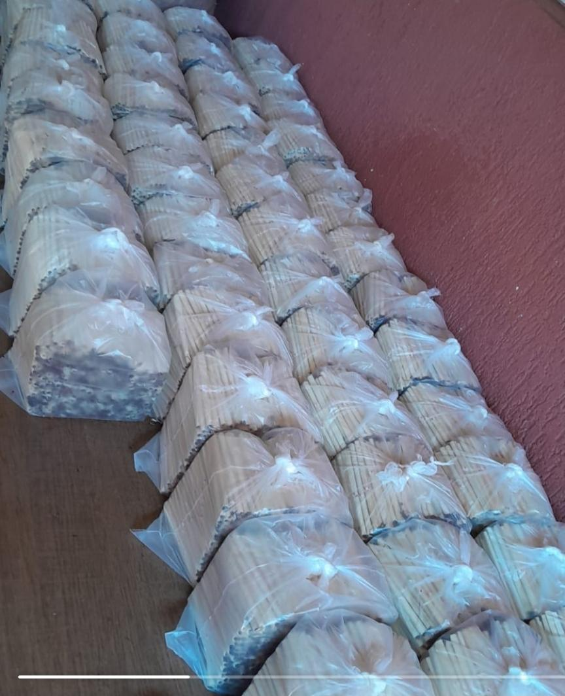

Blend técnico de cordas mineiras peneirado, zero pó
Combinação controlada de cordas mineiras com trato doce e seco e goiano, equilibrando corpo, suavidade e rendimento.
Fumo peneirado em peneira rotativa própria, removendo impurezas e garantindo produto limpo e homogêneo.
Maturação e umidade monitoradas lote a lote para preservar o "suor" natural da corda e o sabor original.
Mesmo padrão de qualidade em todos os lotes. Rendimento médio de 1.200 palheiros por quilo.
Na 33 Tabaco, cada lote passa por curadoria técnica rigorosa antes de chegar ao produtor. Controlamos a maturação e a umidade exata para preservar o "suor" natural da corda mineira — o que garante sabor e rendimento superiores no produto final.
Nosso blend exclusivo combina cordas mineiras com trato doce e seco com fumo goiano. O resultado é um fumo desfiado com equilibrio de corpo e suavidade, ideal para quem produz palheiro com padrão de qualidade consistente.

Nosso processo de peneiramento separa 100% das impurezas — sem palha, sem pó, só fumo limpo. É aqui que começa a qualidade do nosso blend.
O resultado fala por si. Fumo desfiado limpo, solto, pronto pra trabalhar. Blends de fumos nobres e tratados, com rendimento e consistência em cada lote.
A etapa que define o sabor e a experiência. Cada lote recebe o trato na medida certa — umidade, maturação e o toque exclusivo que diferencia o 33 Tabaco.
Ajudamos sua empresa a produzir mais com menos perda. Oferecemos consultoria especializada em duas frentes:
Aumento de produção — otimização do processo de enrolamento, rendimento por kg e controle de estoque.
Tratamento e qualidade do fumo — fórmulas de tratamento, umidade ideal, redução de descarte e identidade sensorial do produto.
Atendemos produtores de palheiros e fumo desfiado que querem escalar com qualidade e consistência.
Trabalhamos com pedidos a partir de pequenos volumes para produtores iniciantes. Entre em contato via WhatsApp para conhecer as condições atuais de pedido mínimo e frequência de reposição.
Sim. O fumo é entregue tratado, peneirado (zero pó) e com umidade controlada para o ponto ideal de enrolamento. Você recebe a matéria-prima pronta para produção, sem necessidade de tratamento adicional.
O rendimento médio é de aproximadamente 1.200 palheiros por quilo de fumo desfiado. Esse número pode variar conforme o tamanho da palha usada e a quantidade de fumo por unidade.
Sim. Atendemos produtores em todo o Brasil. O fornecimento é feito com entrega direta via transportadora ou Correios, dependendo do volume e localização.
Sim. Oferecemos consultoria especializada em otimização de processo, rendimento por kg, controle de umidade, blend e redução de descarte. A consultoria é voltada para produtores que querem escalar com qualidade consistente.
Entre em contato para conhecer nossos volumes, preços e condições de fornecimento. Atendemos produtores de palheiro com pedidos regulares.
WhatsApp: (17) 98108-5993 Falar com a 33 Tabaco